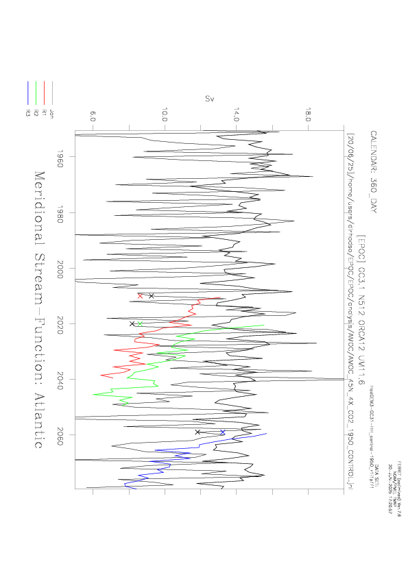

⬅ Back to gallery

AMOC 45N HH control-1950 and abrupt-4xCO2 - annual means and Jan 16 monthly means - with first 12 months from initialization
/gws/nopw/j04/epoc/dlrhodso/analysis/AMOC/AMOC_45N_4X_CO2_1950_CONTROL.plt